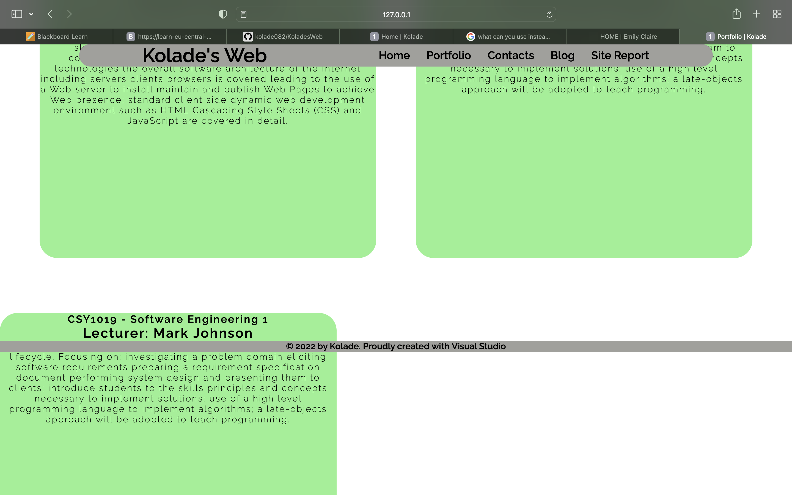
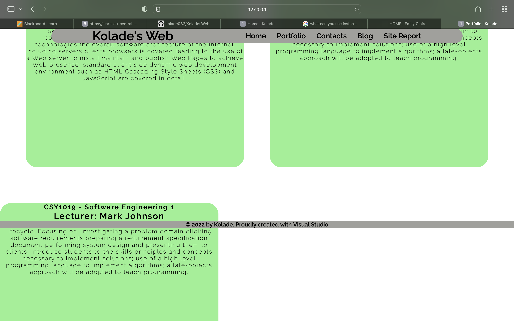

Introduction
This page is to give feedback on how the website which you are currently on was created, the issues encountered, corrective measures taken and how I came up with the layout of each page. Each page contains an html which is linked to a main css, desktop css and mobile css. In total, this website contains seven html’s.
Experience
This is the first time creating a website so there were lot of trial and errors. The first two websites I coded didn’t turn out well, so I had to start afresh. Programming the first and second website, the aims and objectives weren’t properly followed especially the part of committing. I committed only twice, had only one branch and so many css’s making it hard to keep track of my work.
 

Layouts & Font

After making so many mistakes like I said, I decided to start again but the two drafts which I had done before made it easier and faster for me to code. Creating the current the site, I decided to make research on how I wanted my site to look like, then I came across this Emily’s page. With the help of Emily’s page, I was able to come up with ideas on how my page will look like. I was going to go for a white background like Emily’s, but from my point of view white didn’t sync well with the design layout which I wanted, so I chose purple. All content has a greenish background which overlays the purple one. I didn’t deliberate much on fonting, just tried different and concluded on the “ raleway, sans-serif ” font family.
Validation
To ensure I used the right tags, and my code complies with both the html and css standard, I used a validator. I did this after coding each page and all came out with no errors after first check apart from the contact page. The validator points are errors in the coding such as using the section tag and not having a header. This was one of errors I had on my contact page but after making corrections, the validator showed no errors.
GitHub/Conclusion
My GitHub for the website has 9 branches, each for one html page and css. Also, I committed over 60 times after every staged change I made on each page. This made its easier to keep track of my progress.
Referencing
Anon, Home. Emily Claire. Available at: https://www.bxwie.com/ [Accessed April 17, 2022].